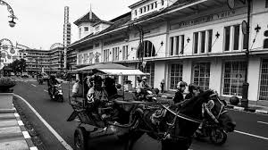

<link rel="stylesheet" href="./output.css" />
<section class="pt-32 px-20 bg-black h-screen w-screen ">
    <div class="flex gap-5 w-full">
        <div class="w-96 h-96 overflow-hidden rounded-lg bg-red-900 relative">
            
        </div>
        <div class="flex flex-col w-1/2">
            <h1 class="text-white font-semibold text-5xl mb-5">HISTORY OF BANDUNG</h1>
            <p class="text-white w-full text-justify">Kota Bandung, ibu kota Provinsi Jawa Barat, didirikan pada 25 September 1810 oleh Gubernur Jenderal Hindia Belanda, Herman Willem Daendels, sebagai bagian dari proyek pengembangan jalur transportasi di Pulau Jawa. Bandung awalnya merupakan tempat peristirahatan kolonial Belanda, karena iklimnya yang sejuk dan lokasinya yang dikelilingi pegunungan. Pada awal abad ke-20, Bandung berkembang pesat sebagai pusat pendidikan, industri, dan budaya, dengan didirikannya sejumlah institusi penting seperti Institut Teknologi Bandung (ITB) pada tahun 1920. Setelah proklamasi kemerdekaan Indonesia, Bandung menjadi salah satu kota penting dalam pergerakan nasional, terutama dengan digelarnya Konferensi Asia-Afrika tahun 1955, yang menandai solidaritas negara-negara Asia dan Afrika melawan kolonialisme dan memperjuangkan kemerdekaan.</p>
        </div>
    </div>
</section>